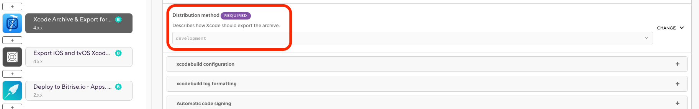
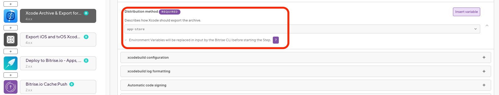

- Bitriseドキュメントへようこそ！
- コード署名
- iOSコード署名
- 複数のコード署名IDを使用してIPAに署名する
複数のコード署名IDを使用してIPAに署名する
単一のBitriseビルド内で、異なるコード署名IDを持つ複数のIPAファイルを作成できます。必要なコード署名ファイルが利用可能であることを確認し、iOSおよびtvOSXcodeアーカイブのエクスポートステップを使用する必要があります。
単一のBitriseビルド内で、異なるコード署名IDを持つ複数のIPAファイルを作成できます。
iOSアプリの開発中に、内部テストやApp Storeへのデプロイなど、さまざまな目的のために複数の種類のディストリビューションが必要になります。幸いなことに、これには2つの別々のワークフローを設定する必要はありません。 bitrise.io。
この例では、2つの署名付きIPAファイルを作成するワークフローを設定します。 development と1つ app-store エクスポート方法。
-
すべての 必要なコード署名ファイル ビルドに使用できます。証明書をにアップロードする必要があることに注意してください コード署名 タブが iOS用のXcodeアーカイブとエクスポート ステップは、に基づいてプロビジョニングプロファイルをダウンロードします 配布方法。
-
あなたが持っていることを確認してください iOS用のXcodeアーカイブとエクスポート ワークフローにステップインします。
-
入力変数のリストで、に移動します エクスポート方法を選択してください 選択します 発達 ドロップダウンメニューから。
 -
をセットする 自動コード署名方式 コード署名に使用するAppleサービス接続への入力。使用可能なオプションは次のとおりです。
-
off自動コード署名を行わない場合。 -
api-keyAPIキー認証を使用する場合。 -
apple-idAppleID認証を使用する場合。
-
-
追加します iOSおよびtvOSXcodeアーカイブをエクスポートします ワークフローに進みます。
-
をセットする 自動コード署名方式 コード署名に使用するAppleサービス接続への入力。使用可能なオプションは次のとおりです。
-
off自動コード署名を行わない場合。 -
api-keyAPIキー認証を使用する場合。 -
apple-idAppleID認証を使用する場合。
-
-
入力変数のリストで、に移動します エクスポート方法を選択してください 選択します アプリストア ドロップダウンメニューから。

そして、あなたは完了です！複数追加してください iOSおよびtvOSXcodeアーカイブをエクスポートします 必要に応じて、複数の異なる署名付き.ipaファイルを作成するワークフローの手順。